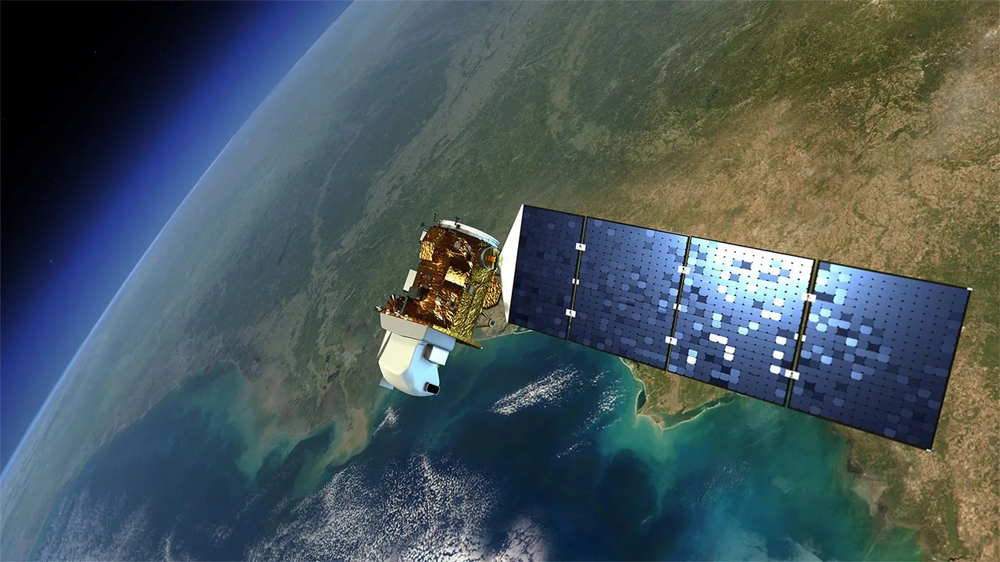

flowchart LR
A[Imágenes satelitales<br/>Landsat 8] --> B[Selección temporal<br/>2013–2025]
B --> C[Control de disponibilidad<br/>6 capas por año]
C --> D[Filtrado de NaN<br/>y recorte de outliers]
D --> E[Alineamiento espacial<br/>a grilla de referencia]
E --> F[Mosaicos anuales<br/>validados]
F --> G[Capas listas<br/>para indicadores]
3 Insumos satelitales e índices espectrales
El modelo parte de la superficie terrestre. Antes de construir cualquier indicador necesita una representación física del territorio, año a año, en términos espectrales y radiométricos. Esa representación son los mosaicos satelitales.
Este capítulo describe la fuente de datos utilizada, las seis variables espectrales que componen el flujo anual, los criterios de control de calidad y el procedimiento de alineamiento que garantiza coherencia entre capas. La región de estudio, las cuencas hidrográficas y las máscaras territoriales se describen en el capítulo anterior.
3.1 Fuente de datos
La fuente principal son los mosaicos Landsat 8 del Servicio Geológico de los Estados Unidos (USGS). Landsat 8 opera desde 2013 con el sensor OLI (Operational Land Imager) y el sensor TIRS (Thermal Infrared Sensor), lo que lo hace el sensor de acceso libre con capacidad simultánea de registrar información óptica multibandal y señal térmica superficial. Las bandas ópticas de OLI tienen resolución espacial de 30 metros, la banda pancromática opera a 15 metros y las bandas térmicas de TIRS tienen resolución nativa de 100 metros, remuestreada a 30 metros en los productos distribuidos (U.S. Geological Survey 2025).

La Tabla 3.1 resume las bandas de Landsat 8 y su función dentro del flujo MRCT. Aunque el modelo no utiliza todas las bandas como variables finales, la tabla permite ubicar cada índice dentro del sistema espectral del sensor.
| Sensor | Banda | Nombre espectral | Longitud de onda (µm) | Resolución | Uso dentro de la MRCT |
|---|---|---|---|---|---|
| OLI | 1 | Aerosol costero | 0,43-0,45 | 30 m | No se usa directamente en los indicadores base. |
| OLI | 2 | Azul | 0,45-0,51 | 30 m | Participa en la estimación de albedo superficial. |
| OLI | 3 | Verde | 0,53-0,59 | 30 m | Participa en NDWI, NDSI y albedo superficial. |
| OLI | 4 | Rojo | 0,64-0,67 | 30 m | Participa en NDVI y albedo superficial. |
| OLI | 5 | Infrarrojo cercano (NIR) | 0,85-0,88 | 30 m | Participa en NDVI, NDWI, NDDI y albedo superficial. |
| OLI | 6 | Infrarrojo de onda corta 1 (SWIR 1) | 1,57-1,65 | 30 m | Participa en NDSI y albedo superficial. |
| OLI | 7 | Infrarrojo de onda corta 2 (SWIR 2) | 2,11-2,29 | 30 m | Participa en la estimación de albedo superficial. |
| OLI | 8 | Pancromática | 0,50-0,68 | 15 m | No se usa directamente en los indicadores base. |
| OLI | 9 | Cirrus | 1,36-1,38 | 30 m | Apoya el control de nubosidad; no entra como indicador final. |
| TIRS | 10 | Infrarrojo térmico 1 | 10,60-11,19 | 100 m | Insumo principal para temperatura de brillo. |
| TIRS | 11 | Infrarrojo térmico 2 | 11,50-12,51 | 100 m | No se usa directamente en el flujo base. |
El modelo cubre el período 2013–2025, con un mosaico por año. La cobertura territorial corresponde a las cuencas hidrográficas de la Región de Magallanes y de la Antártica Chilena, un territorio con alta variabilidad ecosistémica y sensibilidad a los efectos del cambio climático sobre hielo, vegetación y régimen hídrico.
La frecuencia de revisita de Landsat 8 es de 16 días. Los mosaicos anuales se construyen como composites de mediana temporal: para cada píxel se toma la mediana de todos los valores observados durante el año. Esto reduce el efecto de perturbaciones puntuales como nubes o sombras residuales y entrega una representación estable del estado superficial anual.
En términos simples
Cada año, el satélite registra múltiples veces las mismas cuencas. Se sintetiza toda esa información en un único mapa anual por variable, usando la mediana de los valores observados. El resultado es una imagen robusta, representativa del comportamiento promedio del ecosistema durante ese año.
3.2 Variables de entrada
El flujo anual trabaja con seis capas espectrales derivadas de los mosaicos Landsat 8. Cada una captura un aspecto diferente de la superficie y es la base de uno o más indicadores del modelo.
3.2.1 NDVI — Índice de Vegetación de Diferencia Normalizada
\text{NDVI} = \frac{\rho_{NIR} - \rho_{Red}}{\rho_{NIR} + \rho_{Red}}
Donde \rho_{NIR} y \rho_{Red} son las reflectancias de superficie en la banda infrarroja cercana (Banda 5) y en la banda roja (Banda 4) respectivamente. La vegetación activa refleja con intensidad en el infrarrojo y absorbe en el rojo, lo que produce valores altos. Rangos típicos van de −1 a 1; valores por encima de 0,2 son consistentes con presencia de vegetación activa.
3.2.2 NDWI — Índice de Agua de Diferencia Normalizada
\text{NDWI} = \frac{\rho_{Green} - \rho_{NIR}}{\rho_{Green} + \rho_{NIR}}
El NDWI amplifica la señal de agua superficial usando la banda verde (Banda 3) y el infrarrojo cercano. Valores positivos indican presencia de agua o humedad; valores negativos corresponden a suelos secos o vegetación sin estrés hídrico. Es la capa base para los indicadores hídricos del modelo.
3.2.3 NDSI — Índice de Nieve de Diferencia Normalizada
\text{NDSI} = \frac{\rho_{Green} - \rho_{SWIR}}{\rho_{Green} + \rho_{SWIR}}
El NDSI aprovecha la alta reflectancia de la nieve en el verde visible (Banda 3) y su baja reflectancia en el infrarrojo de onda corta (Banda 6). Valores superiores a 0,4 son consistentes con cobertura de nieve o hielo. Es el insumo directo del indicador de criósfera.
3.2.4 NDDI — Índice de Déficit Hídrico de Diferencia Normalizada
\text{NDDI} = \frac{\text{NDVI} - \text{NDWI}}{\text{NDVI} + \text{NDWI}}
El NDDI combina la señal vegetal y la hídrica para capturar tensión hídrica o condiciones de aridez relativa (Gu et al. 2007). Cuando la vegetación es activa pero el agua escasa, el NDDI toma valores altos. Es el insumo del indicador de aridez (IA) y participa también en la estimación de sensibilidad climática.
3.2.5 ALB — Albedo superficial
El albedo mide la fracción de radiación solar incidente que la superficie refleja. En el flujo MRCT se aproxima como albedo de onda corta a partir de una combinación ponderada de reflectancias de superficie Landsat. La forma funcional usada sigue la conversión estrecha-a-ancha propuesta para sensores multiespectrales por Liang (2001). La expresión aplicada es:
\text{ALB} = 0{,}356\rho_{Blue} + 0{,}130\rho_{Red} + 0{,}373\rho_{NIR} + 0{,}085\rho_{SWIR1} + 0{,}072\rho_{SWIR2} - 0{,}0018
donde \rho_{Blue}, \rho_{Red}, \rho_{NIR}, \rho_{SWIR1} y \rho_{SWIR2} corresponden a las reflectancias de superficie de las bandas 2, 4, 5, 6 y 7 de Landsat 8, respectivamente. El resultado es adimensional y se interpreta en el rango físico esperado de 0 a 1, aunque durante el control de calidad pueden revisarse valores fuera de rango producidos por ruido, sombra, nieve extrema o errores residuales de corrección.
Superficies como nieve, hielo o suelo desnudo claro presentan albedo alto; vegetación densa y agua presentan albedo bajo. Variaciones en el albedo medio de una cuenca reflejan cambios en la composición superficial y en el balance radiativo del territorio.
3.2.6 TB — Temperatura de brillo
La temperatura de brillo corresponde a la señal térmica de la Banda 10 del sensor TIRS. Es la temperatura aparente que tendría un cuerpo negro emitiendo la misma radiancia que la superficie observada. En términos radiométricos, la conversión desde radiancia espectral a temperatura de brillo se define como (U.S. Geological Survey 2026):
T_{B,K} = \frac{K_2}{\ln\left(\frac{K_1}{L_{\lambda}} + 1\right)}
donde T_{B,K} es la temperatura de brillo en Kelvin, L_{\lambda} es la radiancia espectral de la banda térmica y K_1 y K_2 son las constantes térmicas específicas de la banda, provistas en el archivo de metadatos del producto Landsat.
Como el modelo trabaja la variable térmica en grados Celsius, la conversión final es:
\text{TB} = T_{B,K} - 273{,}15
Por tanto, si el raster térmico de entrada ya viene expresado como temperatura de brillo en Kelvin, el procesamiento solo aplica la resta de 273,15 para obtener grados Celsius. Si el insumo inicial corresponde a radiancia, primero se aplica la ecuación radiométrica y luego la conversión de Kelvin a Celsius.
Esta variable no equivale a una temperatura de superficie terrestre plenamente corregida por emisividad y atmósfera. En la MRCT se usa como un proxy radiométrico consistente de carga térmica superficial, adecuado para comparar unidades territoriales bajo el mismo flujo de procesamiento.
La Tabla 3.2 resume las características de cada capa y sus usos en el modelo.
| Capa | Bandas Landsat 8 | Rango utilizado | Indicadores derivados |
|---|---|---|---|
| NDVI | Banda 5 (NIR), Banda 4 (Red) | −1 a 1 | VEG, IRV, estructura del paisaje |
| NDWI | Banda 3 (Green), Banda 5 (NIR) | −1 a 1 | WA, HUM, IEH |
| NDSI | Banda 3 (Green), Banda 6 (SWIR) | −1 a 1 | PN |
| NDDI | Derivado de NDVI y NDWI | −5 a 5 | IA |
| ALB | Combinación multibanda | 0 a 1 | ALB |
| TB | Banda 10 (TIRS) | °C | TB |
3.3 Control de calidad
Primero se limpia la señal. Después se calcula. Esa es la regla que estructura el preprocesamiento.
Antes de derivar cualquier indicador, el modelo aplica una secuencia de filtros sobre las capas de cada año.
Verificación de disponibilidad. Se comprueba que las seis capas existan para el año en cuestión. Si falta cualquiera de ellas, el año se descarta en su totalidad. No se interpola ni se sustituye desde años adyacentes.
Propagación de valores no válidos. Todos los rasters se leen como valores de punto flotante de 32 bits. Los valores NaN —producidos por nubes, sombras no enmascaradas o bordes de escena— se propagan a lo largo del procesamiento y nunca participan en el cálculo de indicadores.
Filtro por huella antrópica. Antes de calcular los indicadores base, se aplica la máscara natural derivada del raster de huella antrópica. Los píxeles con valor mayor a 0,2 se excluyen del área de análisis; los píxeles con valor menor o igual a 0,2 se mantienen como superficie natural o de baja intervención. Este filtro se aplica junto con la máscara de cuenca y la disponibilidad de datos válidos, por lo que los estadísticos anuales se calculan sólo sobre píxeles que pertenecen a una cuenca, tienen datos satelitales válidos y no superan el umbral de intervención humana.
Recorte de valores anómalos en NDDI. El NDDI puede producir valores extremos cuando ambos índices son simultáneamente cercanos a cero. Para mitigarlo, se registran los percentiles 1 y 99 de la distribución anual y se aplica un recorte simétrico a ±5, reteniendo más del 98% de la distribución observada y eliminando artefactos numéricos.
Umbral de cobertura mínima. Una vez aplicadas las máscaras territoriales, se cuenta el número de píxeles válidos dentro del área de análisis. Si ese número es inferior a 1.000 píxeles, el año se omite. Este umbral garantiza que los estadísticos por cuenca tengan representatividad mínima.
3.4 Alineamiento espacial
Todos los rasters deben compartir exactamente la misma grilla espacial: igual resolución, mismo origen, misma proyección cartográfica y misma extensión. Sin esa condición, la comparación píxel a píxel entre capas introduce errores de registro que contaminan los indicadores derivados.
La grilla de referencia es la del raster de cuencas (basins_aligned.tif). Al cargar cada capa anual, el modelo compara automáticamente su grilla con la de referencia. Si coinciden, la capa se usa directamente. Si no, se reproyecta usando el método de vecino más cercano, que conserva los valores originales sin introducir interpolaciones artificiales entre clases espectrales.